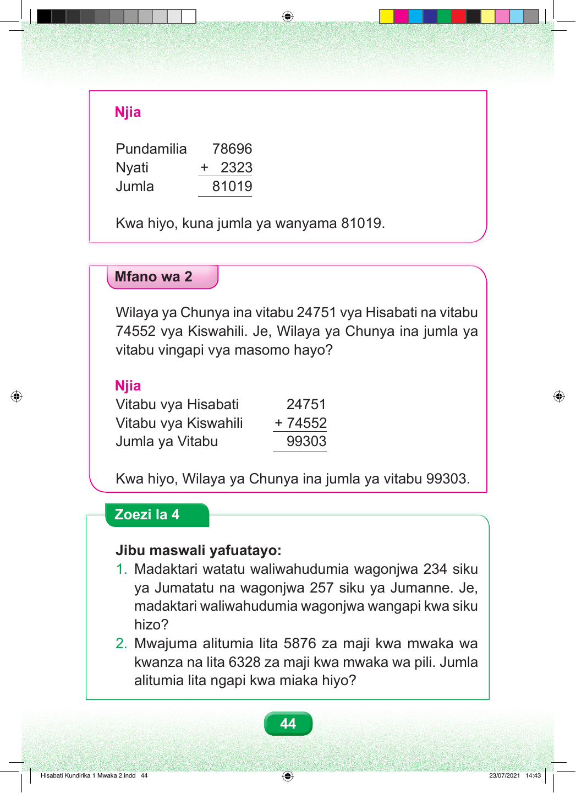

Njia Pundamilia 78696 Nyati + 2323 Jumla 81019 Kwa hiyo, kuna jumla ya wanyama 81019. Mfano wa 2 Wilaya ya Chunya ina vitabu 24751 vya Hisabati na vitabu 74552 vya Kiswahili. Je, Wilaya ya Chunya ina jumla ya vitabu vingapi vya masomo hayo? Njia Vitabu vya Hisabati 24751 Vitabu vya Kiswahili + 74552 Jumla ya Vitabu 99303 Kwa hiyo, Wilaya ya Chunya ina jumla ya vitabu 99303. Zoezi la 4 Jibu maswali yafuatayo: 1. Madaktari watatu waliwahudumia wagonjwa 234 siku ya Jumatatu na wagonjwa 257 siku ya Jumanne. Je, madaktari waliwahudumia wagonjwa wangapi kwa siku hizo? 2. Mwajuma alitumia lita 5876 za maji kwa mwaka wa kwanza na lita 6328 za maji kwa mwaka wa pili. Jumla alitumia lita ngapi kwa miaka hiyo? 44 Hisabati Kundirika 1 Mwaka 2.indd 44 23/07/2021 14:43